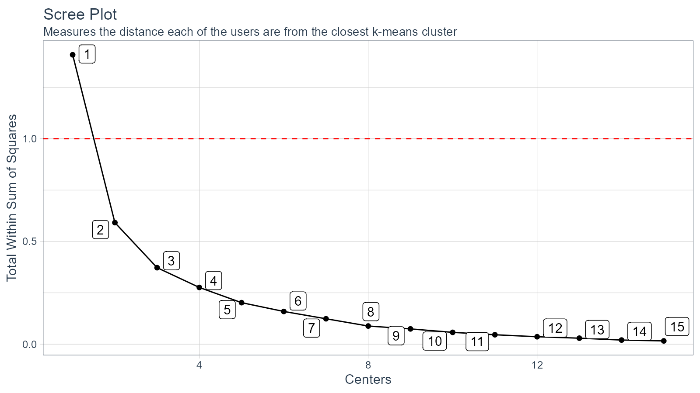
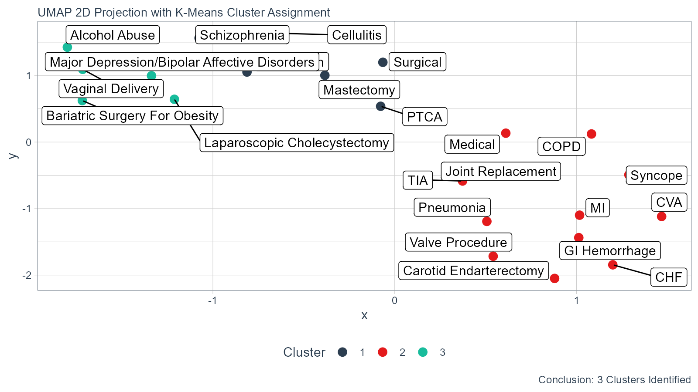

vignettes/kmeans-umap.Rmd
kmeans-umap.RmdhealthyR: A toolkit for hospital data
K-Means is a partion algorithm initially designed for signal processing. The goal is to partition n observations into k clusters where each n is in k. The unsupervised k-means algorithm has a loose relationship to the k-nearest neighbor classifier, a popular supervised machine learning technique for classification that is often confused with k-means due to the name. Applying the 1-nearest neighbor classifier to the cluster centers obtained by k-means classifies new data into the existing clusters.
The aim of this vignette is to showcase the use of the healthyR wrapper for the kmeans function the the wrapper and plot for the uwot::umap projection function. We will go through the entire workflow from getting the data to getting the fina UMAP plot.
library(healthyR.data)
library(dplyr)
library(broom)
library(ggplot2)
data_tbl <- healthyR_data %>%
filter(ip_op_flag == "I") %>%
filter(payer_grouping != "Medicare B") %>%
filter(payer_grouping != "?") %>%
select(service_line, payer_grouping) %>%
mutate(record = 1) %>%
as_tibble()
data_tbl %>%
glimpse()
#> Rows: 116,823
#> Columns: 3
#> $ service_line <chr> "Medical", "Schizophrenia", "Syncope", "Pneumonia", "Ch~
#> $ payer_grouping <chr> "Blue Cross", "Medicare A", "Medicare A", "Medicare A",~
#> $ record <dbl> 1, 1, 1, 1, 1, 1, 1, 1, 1, 1, 1, 1, 1, 1, 1, 1, 1, 1, 1~Now that we have our data we need to generate what is called a user item table. To do this we use the function kmeans_user_item_tbl which takes in just a few arguments. The purpose of the user item table is to aggregate and normalize the data between the users and the items.
The data that we have generated is going to look for clustering amongst the service_lines (the user) and the payer_grouping (item) columns.
Lets now create the user item table.
uit_tbl <- kmeans_user_item_tbl(data_tbl, service_line, payer_grouping, record)
uit_tbl
#> # A tibble: 23 x 12
#> service_line `Blue Cross` Commercial Compensation `Exchange Plans` HMO
#> <chr> <dbl> <dbl> <dbl> <dbl> <dbl>
#> 1 Alcohol Abuse 0.0941 0.0321 0.000525 0.0116 0.0788
#> 2 Bariatric Surge~ 0.317 0.0583 0 0.0518 0.168
#> 3 Carotid Endarte~ 0.0845 0.0282 0 0 0.0141
#> 4 Cellulitis 0.110 0.0339 0.0118 0.00847 0.0805
#> 5 Chest Pain 0.144 0.0391 0.00290 0.00543 0.112
#> 6 CHF 0.0295 0.00958 0.000518 0.00414 0.0205
#> 7 COPD 0.0493 0.0228 0.000228 0.00548 0.0342
#> 8 CVA 0.0647 0.0246 0.00107 0.0107 0.0524
#> 9 GI Hemorrhage 0.0542 0.0175 0.00125 0.00834 0.0480
#> 10 Joint Replaceme~ 0.139 0.0179 0.0336 0.00673 0.0516
#> # ... with 13 more rows, and 6 more variables: Medicaid <dbl>,
#> # Medicaid HMO <dbl>, Medicare A <dbl>, Medicare HMO <dbl>, No Fault <dbl>,
#> # Self Pay <dbl>The table is aggregated by item for the various users to which the algorithm will be applied.
Now that we have this data we need to find what will be out optimal k (clusters). To do this we need to generate a table of data that will have a column of k and for that k apply the k-means function to the data with that k and return the total within sum of squares.
To do this there is a convienent function called kmeans_mapped_tbl that takes as its sole argument the output from the kmeans_user_item_tbl. There is an argument .centers where the default is set to 15.
kmm_tbl <- kmeans_mapped_tbl(uit_tbl)
kmm_tbl
#> # A tibble: 15 x 3
#> centers k_means glance
#> <int> <list> <list>
#> 1 1 <kmeans> <tibble [1 x 4]>
#> 2 2 <kmeans> <tibble [1 x 4]>
#> 3 3 <kmeans> <tibble [1 x 4]>
#> 4 4 <kmeans> <tibble [1 x 4]>
#> 5 5 <kmeans> <tibble [1 x 4]>
#> 6 6 <kmeans> <tibble [1 x 4]>
#> 7 7 <kmeans> <tibble [1 x 4]>
#> 8 8 <kmeans> <tibble [1 x 4]>
#> 9 9 <kmeans> <tibble [1 x 4]>
#> 10 10 <kmeans> <tibble [1 x 4]>
#> 11 11 <kmeans> <tibble [1 x 4]>
#> 12 12 <kmeans> <tibble [1 x 4]>
#> 13 13 <kmeans> <tibble [1 x 4]>
#> 14 14 <kmeans> <tibble [1 x 4]>
#> 15 15 <kmeans> <tibble [1 x 4]>As we see there are three columns, centers, k_means and glance. The k_means column is the k_means list object and glance is the tibble returned by the broom::glance function.
kmm_tbl %>%
tidyr::unnest(glance)
#> # A tibble: 15 x 6
#> centers k_means totss tot.withinss betweenss iter
#> <int> <list> <dbl> <dbl> <dbl> <int>
#> 1 1 <kmeans> 1.41 1.41 1.33e-15 1
#> 2 2 <kmeans> 1.41 0.592 8.17e- 1 1
#> 3 3 <kmeans> 1.41 0.372 1.04e+ 0 2
#> 4 4 <kmeans> 1.41 0.276 1.13e+ 0 2
#> 5 5 <kmeans> 1.41 0.202 1.21e+ 0 2
#> 6 6 <kmeans> 1.41 0.159 1.25e+ 0 3
#> 7 7 <kmeans> 1.41 0.124 1.28e+ 0 3
#> 8 8 <kmeans> 1.41 0.0884 1.32e+ 0 2
#> 9 9 <kmeans> 1.41 0.0745 1.33e+ 0 2
#> 10 10 <kmeans> 1.41 0.0576 1.35e+ 0 2
#> 11 11 <kmeans> 1.41 0.0461 1.36e+ 0 2
#> 12 12 <kmeans> 1.41 0.0363 1.37e+ 0 3
#> 13 13 <kmeans> 1.41 0.0282 1.38e+ 0 2
#> 14 14 <kmeans> 1.41 0.0202 1.39e+ 0 2
#> 15 15 <kmeans> 1.41 0.0164 1.39e+ 0 3As stated we use the tot.withinss to decide what will become our k, an easy way to do this is to visualize the Scree Plot, also known as the elbow plot. This is done by ploting the x-axis as the centers and the y-axis as the tot.withinss.
kmeans_scree_plt(.data = kmm_tbl)
If we want to see the scree plot data that creates the plot then we can use another function kmeans_scree_data_tbl.
kmeans_scree_data_tbl(kmm_tbl)
#> # A tibble: 15 x 2
#> centers tot.withinss
#> <int> <dbl>
#> 1 1 1.41
#> 2 2 0.592
#> 3 3 0.372
#> 4 4 0.276
#> 5 5 0.202
#> 6 6 0.159
#> 7 7 0.124
#> 8 8 0.0884
#> 9 9 0.0745
#> 10 10 0.0576
#> 11 11 0.0461
#> 12 12 0.0363
#> 13 13 0.0282
#> 14 14 0.0202
#> 15 15 0.0164With the above pieces of information we can decide upon a value for k, in this instance we are going to use 3. Now that we have that we can go ahead with creating the umap list object where we can take a look at a great many things associated with the data.
Now lets go ahead and create our UMAP list object.
ump_lst <- umap_list(.data = uit_tbl, kmm_tbl, 3)Now that it is created, lets take a look at each item in the list. The umap_list function returns a list of 5 items.
Since we have the list object we can now inspect the kmeans_obj, first thing we will do is use the kmeans_tidy_tbl function to inspect things.
km_obj <- ump_lst$kmeans_obj
kmeans_tidy_tbl(.kmeans_obj = km_obj, .data = uit_tbl, .tidy_type = "glance")
#> # A tibble: 1 x 4
#> totss tot.withinss betweenss iter
#> <dbl> <dbl> <dbl> <int>
#> 1 1.41 0.372 1.04 2
kmeans_tidy_tbl(km_obj, uit_tbl, "augment")
#> # A tibble: 23 x 2
#> service_line cluster
#> <chr> <fct>
#> 1 Alcohol Abuse 2
#> 2 Bariatric Surgery For Obesity 2
#> 3 Carotid Endarterectomy 1
#> 4 Cellulitis 3
#> 5 Chest Pain 3
#> 6 CHF 1
#> 7 COPD 1
#> 8 CVA 1
#> 9 GI Hemorrhage 1
#> 10 Joint Replacement 1
#> # ... with 13 more rows
kmeans_tidy_tbl(km_obj, uit_tbl, "tidy")
#> # A tibble: 3 x 14
#> `Blue Cross` Commercial Compensation `Exchange Plans` HMO Medicaid
#> <dbl> <dbl> <dbl> <dbl> <dbl> <dbl>
#> 1 0.0784 0.0218 0.00432 0.00620 0.0449 0.0368
#> 2 0.150 0.0368 0.000307 0.0207 0.163 0.131
#> 3 0.117 0.0314 0.0102 0.0139 0.0982 0.0856
#> # ... with 8 more variables: Medicaid HMO <dbl>, Medicare A <dbl>,
#> # Medicare HMO <dbl>, No Fault <dbl>, Self Pay <dbl>, size <int>,
#> # withinss <dbl>, cluster <fct>Now that we have all of the above data we can visualize our clusters that are colored by their cluster number.
umap_plt(.data = ump_lst, .point_size = 3, TRUE)